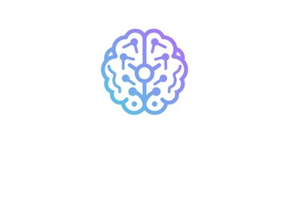
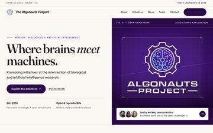
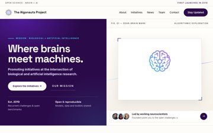
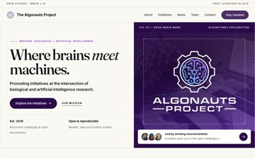
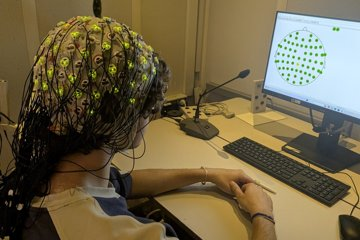

Evolve https://algonautsproject.com/ for Biological and artificial intelligence researchers, neuroscientists, ML scientists and open-science collaborators: primary task 'Grasp the brain-AI mission in 3s and click Explore the Initiatives', tone Visionary, scientific, open and collaborative. Penalise any information or element present on the live page that is missing here. · design language editorial
BEFORE · live site (full page, 1280 wide)

brain 0.547 · judge 0.86
Object-shape (LO) and motion (MT) areas are low: a text-first screen with no clear object silhouette / Place areas (PPA/RSC) dominate: the background scene swallows the message
AFTER · round 1 (full page, 1280 wide)

brain 0.487 · judge 0.86
round 1 · brain said
“Object-shape (LO) and motion (MT) areas are low: a text-first screen with no clear object silhouette”
agent chose
restyle_asset — keep real asset assets/img_ab90c30b3e.png and restyle around it (frame)


brain -0.06 · judge +0.00 · kept
round 1 · brain said
“Face areas (FFA/STS) are silent: no human or gaze cue”
agent chose
photo —
brain -0.06 · judge +0.00 · kept
round 2 · brain said
“Object-shape (LO) and motion (MT) areas are low: a text-first screen with no clear object silhouette / Place areas (PPA/RSC) dominate: the b”
agent chose
reflow — {"move": "Place hero copy on solid #2B0A4A panel left, isolate large gear-brain logo as single dominant s

brain +0.02 · judge -0.08 · rejected · fidelity: missing ['k2']
round 2 · brain said
“Reward circuit (OFC/vmPFC) is on but the appeal head is average: value is felt but what is good isn't legible”
agent chose
typography — {"display": "Space Grotesk", "body": "Inter", "scale": "64px"
brain +0.02 · judge -0.08 · rejected · fidelity: missing ['k2']
round 3 · brain said
“Object-shape (LO) and motion (MT) areas are low: a text-first screen with no clear object silhouette”
agent chose
restyle_asset — keep real asset assets/img_ab90c30b3e.png and restyle around it (crop)


brain -0.13 · judge -0.08 · rejected
round 3 · brain said
“Place areas (PPA/RSC) dominate: the background scene swallows the message”
agent chose
photo — CC photo 'EEG Experiment.jpg' (CC0), treatment duotone

brain -0.13 · judge -0.08 · rejected